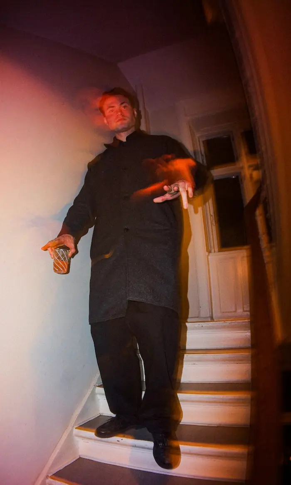

Hvem er jeg?
Anton Jepsen

Uddanelse og erhverserfaring
- Nuværende - Multimediedesign, Kea, Nørrebro.
- Vallekilde højskole, 5 måneder, design og maker linjen, udgang i 2024.
- Gymnasiel STX, samfundsfag-engelsk, falkonergårdens gymnasie og hf kursus, udgang i 2022.
- Highschool year 11/12 kalamunda senior highschool, WA, AUS, (10 måneder) udvekslingsstudent, med fokus på teknisk tegning og bygningsdesign. Udgang i 2019
Reflektion af 1. semester på multimediedesign
Efter 1. semester på multimediedesignuddannelsen kan jeg med selvtillid sige, at jeg har opnået en bred forståelse for de grundlæggende designprincipper inden for multimediedesign. Derudover har jeg tilegnet mig kompetencer inden for kodning i VS Code samt erfaring med forskellige Adobe-programmer og tilhørende værktøjer som Figma, Trello, Squoosh og LottieFiles m.fl. Jeg har desuden lært, at research- og forberedelsesfasen i en designproces er afgørende for det endelige resultat, og at design handler om mere end blot idéudvikling og eksekvering.